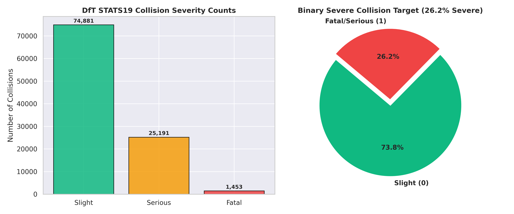
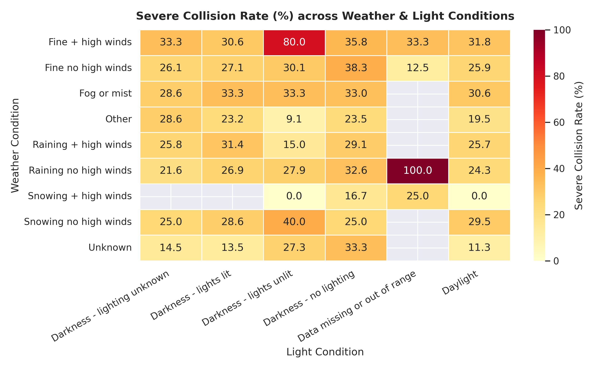
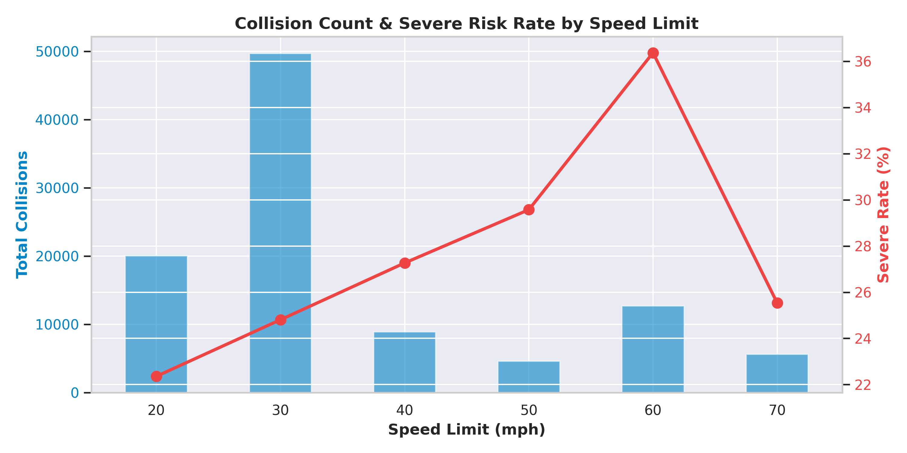

Student: Kunche Abhishek | Second Year (Sem 1) | Reference: mark999-143.web.app
A full-stack data science & software engineering intelligence system that evaluates 101,525 national collision records to prioritize high-risk road conditions under tight municipal budgets.
1. Road Type: Single carriageway (73%), Dual carriageway (14.4%), Roundabout (6.7%), One-way street (2.4%), Slip road (1.6%).
2. Weather: Fine no high winds (82.1%), Raining (10.1%), Raining + high winds (0.9%), Fog/mist (0.3%).
3. Light Conditions: Daylight (71.7%), Darkness lit (20.4%), Darkness no lighting (5.6% - 36.3% severe rate!).
4. Junction Detail: Not at junction (44.6%), T/staggered junction (27.8%), Crossroads & mini-roundabouts (9.3%).
5. Speed Limit: 20, 30, 40, 50, 60, 70 mph posted zones.
Evaluates whether collision severity is independent of environmental factors:
Where E_ij = (Row_i × Col_j) / N. df = (r - 1)(c - 1).
Normalizes test statistic into [0, 1] to reflect actual associative magnitude:
Where baseline prior P(Severe) = 26.24%. A multiplier R > 1.0 flags excessive danger conditions:
Directly aligns model evaluation with real council capacity (K = 25 road interventions).
Performs B = 1,000 resamples with replacement on test predictions to establish empirical statistical certainty bounds.
| Model / Benchmark | Architecture Type | ROC-AUC | Precision@25 | 95% Bootstrapped CI | Recall@25 |
|---|---|---|---|---|---|
| Baseline 1: Majority Class | Non-ML | 0.5000 | 44.0% | [8.0%, 44.1%] | 0.21% |
| Baseline 2: Group-By Road Type | Non-ML | 0.5415 | 32.0% | [12.0%, 48.0%] | 0.15% |
| Logistic Regression (Balanced) | Linear ML | 0.5881 (Top AUC) | 32.0% | [16.0%, 56.0%] | 0.15% |
| AdaBoost Classifier | Ensemble ML | 0.5679 | 40.0% (Top Precision) | [19.9%, 56.0%] | 0.19% |
| Bagging Classifier (Trees) | Ensemble ML | 0.5834 | 36.0% | [12.0%, 48.0%] | 0.17% |
| Decision Tree (Depth=8) | Tree ML | 0.5801 | 20.0% | [8.0%, 40.0%] | 0.09% |
| Naive Bayes (GaussianNB) | Bayesian ML | 0.5747 | 24.0% | [15.9%, 52.0%] | 0.11% |

Severity Distribution

Weather × Light Risk Heatmap

Speed Limit Hazard Curve